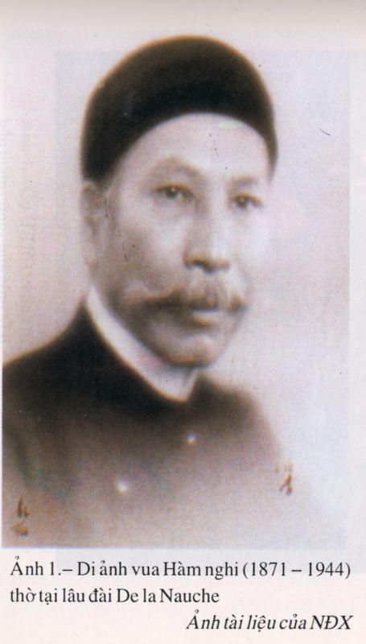

Vua Kiến Phúc mất, đáng lý con thứ hai của vua Tự Đức là ông Chánh Mông lên nối ngôi, nhưng Nguyễn Văn Tường và Tôn Thất Thuyết không muốn lập, bèn chọn em ông Chánh Mông là Ưng Lịch lên làm vua, niên hiệu Hàm Nghi lúc đó mới mười ba tuổi
Lễ đăng quang của Hàm Nghi được tiến hành ngày 1 - 8 - 1884.
Làm vua chưa được 1 năm, Kinh Thành thất thủ vào đêm 4 -7 -1885 ( đêm 22, sang 23 Ất Dậu )
vua Hàm Nghi và Hoàng Thái Hậu được Tôn Thất Thuyết mời lên kiệu tẩu thoát.
Hàm Nghi mới 13 tuổi sửng sốt nói:
- Ta có đánh nhau với ai đâu mà phải chạy.
Tôn Thất Thuyết liền rút gươm ra khiến quân lính vực vua lên kiệu, qua cửa Hữu, ra khỏi phòng thành đi về phía Kim Long.
Đến Quảng Trị, đoàn đạo ngự chia làm hai, một đoàn theo đức Từ Dũ trở về Huế gồm có các hoàng thân và quan lại, hoặc già yếu, hoặc mất ý chí chiến đấu và phụ nữ không muốn đi lên Tân Sở. Một đoàn đi theo nhà vua lên Tân Sở gồm những quan văn, võ muốn giữ trọn chữ trung với nhà vua ; với nước và các phụ nữ muốn đi theo cha mẹ, chồng con.
Sáng sớm mồng 9 tháng 7, sau khi bái biệt Từ Dũ Thái hậu và hai bà Trang Ý, Học Phi, nhà vua lên đường ngay và chiều tối thì đến thành Tân Sở. Hàm Nghi cả gày đăm chiêu, buồn rầu vì nhớ Kinh Đô. Sau 3 ngày ở Tân Sở, nhà vua đòi Tôn Thất Thuyết cho người đưa về Huế, nhưng Tôn Thất Thuyết tỏ ý chí quyết chiến với Pháp, nên hai ngày sau Thuyết đệ vua một tờ chiếu kể tội giặc Pháp và yêu cầu nhân dân nổ dậy chống Pháp. Hịch Cần Vương ra đời
Nhà vua đọc hai lần mới phê chuẩn, rồi nói thêm:
- Bây giờ Trẫm mới hiểu vì sao khanh không muốn Trẫm về Huế còn bị giặc Pháp chiếm đóng.
- Vậy nếu công cuộc kháng chiến đòi hỏi phải đi vào sống trong rừng sâu, Ngài có đi không? Tôn Thất Thuyết hỏi:
- Đi đâu cũng đi, sống thế nào cũng được, miễn là đuổi cho giặc Pháp ra khỏi đất nước. Nhà vua nói với giọng trầm, chậm rãi nhưng cương quyết.
Thế là ngày hôm sau, Tôn Thất Thuyết phò vua rời Tân Sở, ngược Mai Lĩnh qua Lào, tiếp tục vượt đèo Qui Hợp, sang địa phận Hà Tỉnh để về Ấn Sơn là nơi mà Tôn Thất Thuyết dự định đặt đại bàn doanh của nhà vua.
Đoàn người trên 500 ra đi từ Hành Cung Quảng trị chỉ còn 200 người cả quan lẫn lính với một cái kiệu trong đó Hàm Nghi đang lên cơn sốt, 6 cái võng, 1 con ngựa, 3 con voi và 50 gánh hành lý
Suốt dọc con đường dài hiểm trở, gian lao, vị vua sơm nếm mùi gian khổ ấy vẫn giữ vững ý chí, trầm ngâm, suy ngẫm về cuộc chiến đấu sẽ vô cùng ác liệt sắp đến.
